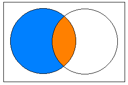
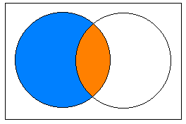

Sentiment Analysis using
a Naive Bayes Classifier
Allen Chen, Akihiro Matsukawa
Hackers@Berkeley
Allen Chen, Akihiro Matsukawa
Hackers@Berkeley
We use probability to describe the likelihood of an event
Conditional probability: probability of event A, given B happened
 

Independence: value of event B does not affect event A
A classifier takes in features, guesses a class

We will build a Naive Bayes classifier.


Ok, I have a vector of features. How do I pick the class?
Answer: Pick the class c with the highest
How do I find this conditonal probability?
We will build a classifier with two classes, and "bag-of-words" style binary features.

"The concert was great."
We will be building a Naive Bayes classifier with two classes and binary features.
"I hate doing the dishes."
We will be building a Naive Bayes classifier with two classes and binary features.
"I ate cookies."
As we saw in the example, "the" was not a very useful feature. But how do we know which one is useful?
Answer: we will use entropy and information gain
Entropy is a measure of unpredictability. Given a set S, the entropy is
Information gain tells us the improvement in the entropy of a set S by splitting it into k small subsets.
eg. split into "positive" and "negative" categories
Information gain gives a measure of how "informative" a feature is.
So: pick features with the highest information gain.
The entropy of a boolean distribution (a Bernoulli) is
Information gain of a particular word is
If I split my tweets into two sets (+ve/-ve), which words am I most likely to see in one
but not in the other?